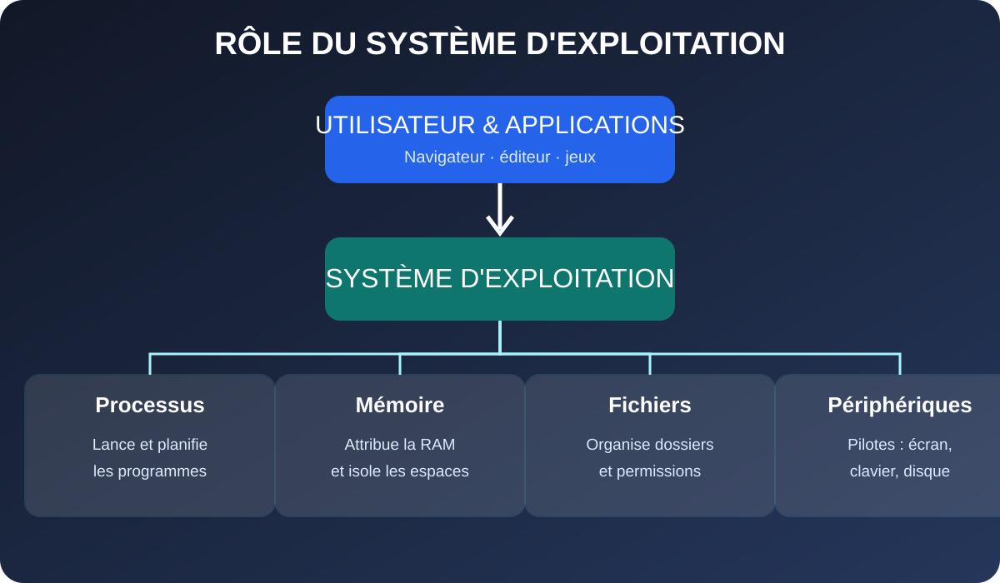

Rôle d'un système d'exploitation
Le système d'exploitation fait le lien entre le matériel et les programmes. Il s'occupe de quatre grandes tâches :
- Les processus : il lance les programmes et partage le temps du processeur entre eux.
- La mémoire : il donne à chaque programme sa part de RAM et empêche qu'ils se marchent dessus.
- Les fichiers : il organise le stockage en dossiers et fichiers et contrôle les droits d'accès.
- Les périphériques : il communique avec le clavier, l'écran, le disque, le réseau grâce aux pilotes.

Comparatif Windows / Linux / macOS
| Critère | Windows | Linux | macOS |
|---|---|---|---|
| Éditeur et licence | Microsoft ; logiciel propriétaire | Noyau libre, plusieurs distributions (Ubuntu, Debian, Fedora…) | Apple ; propriétaire, basé sur Unix |
| Coût | Payant (souvent inclus avec le PC) | Gratuit | Inclus avec les Mac |
| Matériel | Très large choix de PC | Fonctionne sur presque tout, y compris les serveurs | Réservé aux ordinateurs Apple |
| Logiciels et jeux | Le plus grand choix, surtout pour les jeux | Beaucoup de logiciels libres ; moins de jeux et de logiciels commerciaux | Bonne offre, très présent en création (vidéo, musique, design) |
| Personnalisation | Moyenne | Très élevée | Faible |
| Terminal | PowerShell, cmd | Bash et autres shells | zsh |
| Usages typiques | Bureautique, jeux, entreprises | Serveurs, développement, systèmes embarqués | Création, développement, usage grand public |
Mini-tutoriel — commandes essentielles
Commandes de base pour se déplacer et gérer des fichiers.
| Action | Linux / macOS | PowerShell |
|---|---|---|
| Où suis-je ? | pwd | Get-Location |
| Lister les fichiers | ls | Get-ChildItem |
| Changer de dossier | cd dossier | Set-Location dossier |
| Créer un dossier | mkdir dossier | New-Item -ItemType Directory dossier |
| Afficher un fichier | cat fichier.txt | Get-Content fichier.txt |
| Copier | cp a.txt b.txt | Copy-Item a.txt b.txt |
| Déplacer / renommer | mv a.txt b.txt | Move-Item a.txt b.txt |
| Supprimer | rm fichier.txt | Remove-Item fichier.txt |
| Aide | man commande | Get-Help commande |
pwd
ls -la
mkdir -p portfolio-test
cd portfolio-test
printf 'Bonjour depuis le terminal\n' > test.txt
cat test.txt
uname -a
df -h .Ces commandes permettent de reproduire les démonstrations. Les sorties sont illustratives et peuvent varier selon l’environnement ; aucune capture personnelle n’est revendiquée.
Comment les trois couches communiquent
Les applications ne pilotent généralement pas directement les circuits. Elles demandent des services au système d’exploitation, qui utilise les pilotes pour communiquer avec les contrôleurs matériels.
- L’application demande une opération (par exemple enregistrer un document).
- Le système d’exploitation vérifie les droits, organise l’accès au fichier et transmet les opérations au pilote du périphérique de stockage.
- Le contrôleur matériel effectue les échanges ; le système d’exploitation informe ensuite l’application du résultat.
Démonstration de commandes dans un terminal
Les sorties suivantes sont des exemples illustratifs : elles ne proviennent pas de l’ordinateur de l’étudiant et peuvent varier selon le système.
Linux / macOS / Termux
$ pwd
/home/etudiant
$ mkdir -p portfolio-test
$ cd portfolio-test
$ printf 'Bonjour depuis le terminal\n' > test.txt
$ cat test.txt
Bonjour depuis le terminal
$ uname -s
LinuxPowerShell
PS> Get-Location
Path
----
C:\Users\Etudiant
PS> New-Item -ItemType Directory portfolio-test
PS> Set-Location portfolio-test
PS> 'Bonjour depuis PowerShell' | Set-Content test.txt
PS> Get-Content test.txt
Bonjour depuis PowerShellAttention : rm et Remove-Item suppriment des fichiers. Vérifier le chemin et le nom avant de les utiliser.
🧾 Fiche de transparence IA
- Outils utilisés :
- Claude (brouillon initial du projet) et ChatGPT (révision et compléments de cette version).
- Rôle de l'IA :
- Claude a rédigé le brouillon de la présentation du rôle d'un système d'exploitation, du tableau comparatif et du tableau de commandes.
- Validation et travail personnel :
- L’étudiant doit relire et comprendre chaque élément, vérifier les informations avec les sources citées et exécuter lui-même les programmes ou manipulations avant la remise. Les exemples et sorties signalés comme démonstrations ne sont pas des preuves personnelles. Les choix finaux, la validation et la présentation doivent être assumés par l’étudiant.
- Sources vérifiées :
- Documentation du noyau Linux — gestion de la mémoire ; GNU Coreutils — commandes du terminal.